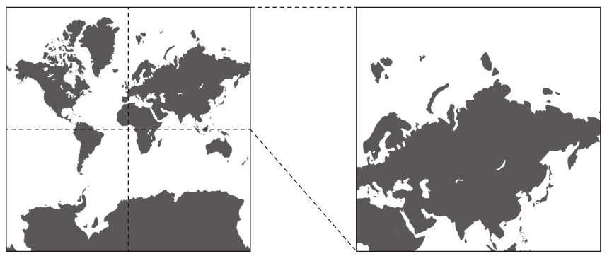
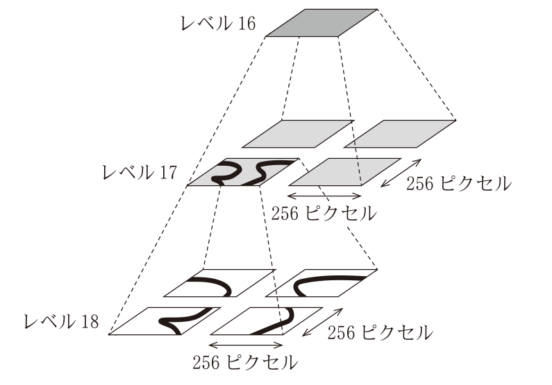

情報Ⅰ（全問必答）
第1問 次の問い（問1～4）に答えよ。（配点20）
問1 次の問い（a・b）に答えよ。
a 日本の著作権法に基づく判断として最も適当なものを，次の⓪～③のうちから一つ選べ。 ア
b デジタル表現に関する記述として最も適当なものを，次の⓪～③のうちから一つ選べ。ただし，画像は圧縮していないものとする。 イ
問2 次の文章を読み，空欄 ウ ・ エ に入れるのに最も適当なものを，後の解答群のうちから一つずつ選べ。
あるクラウドサービスの地図データは，表示に必要な部分だけを取得できるよう，極地方を除いた地球表面を正方形で表す地図を規則的に分割して提供されている（図3）。一つの分割した範囲を表す地図をタイルと呼ぶ。様々な縮尺での表示に対応するため，図4のように，複数の縮尺のタイルが準備されている。図3左の領域全体を2k×2k（k ＝0，1，2，…）に分けたタイルをレベルkのタイルと呼ぶ。このサービスでは，どのレベルでもタイル画像のピクセル数は変わらず，256ピクセル×256ピクセルの大きさである。
タイルの1辺が地球上でどれほどの長さにあたるかは緯度によって異なるが，ここでは，レベル17のタイルの1辺が縦横ともに300m にあたる場所の周辺での表示を考える。1024ピクセル×512ピクセルの画面に，その場所の周辺の4．8km ×2．4km の範囲を表示したいとすると，1辺が1．2km にあたるレベル ウ のタイルを4×2枚並べれば表示が可能である。これは，すべてレベル17のタイルを取得して同じ範囲の地図を表示したときと比べて エ 倍のデータ量で済んだことになる。なお，画像データの圧縮は考えないものとする。


問3 次の文章を読み，空欄 オ ～ ク に入れるのに最も適当なものを，後の解答群のうちから一つずつ選べ。
S さんの学校では，放課後に部活動団体が施設を利用する場合は，施設を事前に予約することになっている。予約は1か月ごとに行い，一日単位で予約できる。同一日において一つの施設は一つの部活動団体が占有するが，一つの部活動団体が同一日に複数の施設を予約することもある。
現在，この予約は，表1のように，ホワイトボードに手書きすることで管理している。これは，一番左の列に日付，一番上の行に施設名を並べた表をあらかじめ用意しておき，予約の際は日付と施設名が交差するマスに部活動団体名を書き込んでいく形式である。この表1を使って，柔道部が7月3日の武道場を予約したい場合は， オ の行を探して， カ が空白であれば，そのマスに「柔道部」と記入する。
S さんは，この予約をコンピュータで管理しようと考えた。情報科の先生に相談したところ，コンピュータでは表2のような形式でデータを管理することが多いと教えてもらった。これは，予約の度に予約の可否を確認し，予約可能であれば表の末尾に新しい行を追加して，予約の日付，施設名，部活動団体名を記入していく形式である。表2のように，各行は三つのマスからなり，空白のマスはない。
表2を使って，先ほどと同様に柔道部が7月3日の武道場を予約したい場合を考えると，予約可能であることを確認した後，表の末尾に，＜日付＞，＜施設＞，＜部活動団体＞のデータとしてそれぞれ「7月3日」，「武道場」，「柔道部」が記入された新しい行を追加することになる。一方で，予約を取り消す権限をもつ教員が，7月3日の武道場に入っている予約を取り消して誰も予約していない状態にしたい場合，表2を使うと， キ の行を探して ク を削除すればよい。
| ＜日付＞ | ＜野球場＞ | ＜グラウンド＞ | ＜体育館＞ | ＜武道場＞ |
|---|---|---|---|---|
| 7月1日 | 軟式野球部 | サッカー部 | ||
| 7月2日 | バドミントン部 | 剣道部 | ||
| 7月3日 | 硬式野球部 | 陸上部 | バレーボール部 | |
| 7月4日 | サッカー部 | ダンス部 | 柔道部 | |
| ⋮ | ||||
| 7月31日 | 硬式野球部 | 硬式野球部 | 卓球部 | 柔道部 |
| ＜日付＞ | ＜施設＞ | ＜部活動団体＞ |
|---|---|---|
| 7月15日 | 体育館 | バレーボール部 |
| 7月2日 | 武道場 | 剣道部 |
| 7月18日 | 野球場 | 軟式野球部 |
| ⋮ | ||
| 7月15日 | グラウンド | サッカー部 |
| 7月2日 | 体育館 | バドミントン部 |
問4 次の文章を読み，後の問い（a・b）に答えよ。
あるラーメン店では，客がタブレット端末を自ら操作してラーメンを注文できるシステムを導入した。この注文システムでは，一つのラーメンを注文する場合，表3で示されたラーメンのスープ・麺の太さ・トッピングのそれぞれを指定する数値の合計が厨房に送られ，厨房ではその数値に基づいてディスプレイに注文が表示される。トッピングは複数種類の具材を指定することが可能であり，一種類の具材は一つしかトッピングできない。また，何も指定しない場合もあり，そのときはトッピングの数値は加算されない。例えば，タブレット端末から3201という数値が送られれば3000＋200＋1と解釈され，厨房のディスプレイに「しお，細麺，玉子」と表示される。
| 数値 | 注文内容 | 備考 | |
|---|---|---|---|
| スープ | 1000 | しょうゆ | 必ず一つ選択される |
| 2000 | みそ | ||
| 3000 | しお | ||
| 4000 | とんこつ | ||
| 麺の太さ | 100 | 普通麺 | 必ず一つ選択される |
| 200 | 細麺 | ||
| 300 | 太麺 | ||
| トッピング | 1 | 玉子 | 複数種類選択可能 （選択なしも可） |
| 2 | コーン | ||
| ？ | のり | ||
| ？ | メンマ |
（一部の数値を“？”で隠してある）
a 異なる注文のラーメンを識別できるようなトッピングの数値の組合せとして最も適当なものを，次の⓪～③のうちから一つ選べ。 ケ
b この店では現在4種類の具材のトッピングが可能だが，さらにトッピング具材の種類を増やしたい。送られる数値の十の位と一の位を見ればトッピングがわかるようにするとき，最大で何種類のトッピング具材を区別することができるか，最も適当なものを，次の解答群のうちから一つ選べ。 コ